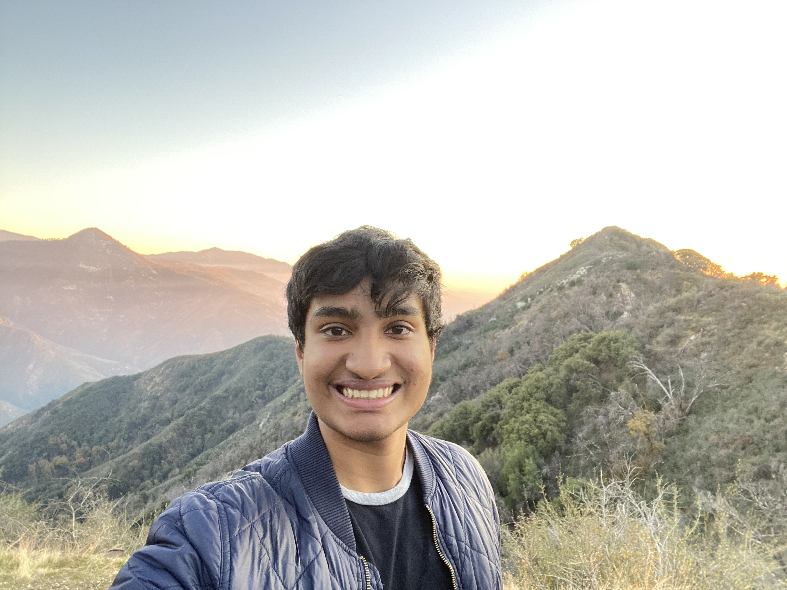

I'm a junior at Stanford University pursuing a B.S. in Mathematics and M.S. in Computer Science (AI) at Stanford, with interests in statistics, deep learning, computer vision, and autonomous systems. I enjoy building things at the intersection of AI, data, and real-world systems.
Uncertainty-aware BEV perception pipeline using YOLOv8n with MC-DropBlock inference to estimate per-detection confidence and project spatial uncertainty maps for risk-aware autonomous driving planning.
GitHub →Turns phone videos into editable 3D scenes using 3D Gaussian Splatting — reconstruct real-world environments and interactively delete, move, and modify objects in 3D space.
GitHub →Comparison of preference-based fine-tuning methods — DPO, ORPO, TOPR, KTO, and RLOO — on Qwen2.5-0.5B for mathematical reasoning tasks using the Countdown dataset. ORPO achieves the best performance with low cost, even from the base model.
GitHub →Simulation framework for multi-agent LLM debates with teacher-guided strategy prompting and judge-based evaluation. Adapted DeepMind's PromptBreeder to mutate and evaluate conflict prompts.
GitHub →ML models to predict NFL Draft outcomes using 13k+ player combine metrics and college statistics. Compares XGBoost, Random Forests, and Neural Networks across draft position and round classification.
GitHub →Speech recognition from silent video using 3D CNNs. Achieves 97.4% training and 99.2% test accuracy, with real-time inference on a set of pre-defined words.
GitHub →I've been playing oboe for 10 years. Alongside my studies at Stanford, I perform with the Stanford Symphony Orchestra and the Stanford Wind Symphony. I also study with Prof. Robin May in his oboe studio.
I'm drawn to probability, statistics, and topology. I enjoy competition math and mathematical writing.
I love playing tennis and following the game. My favorite player is Carlos Alcaraz. I've already been to the Miami Open and it's on my bucket list to visit all four Grand Slams: the US Open, Wimbledon, Roland Garros, and the Australian Open. Always down to play!
Reach me at devj10@stanford.edu or find me on GitHub.